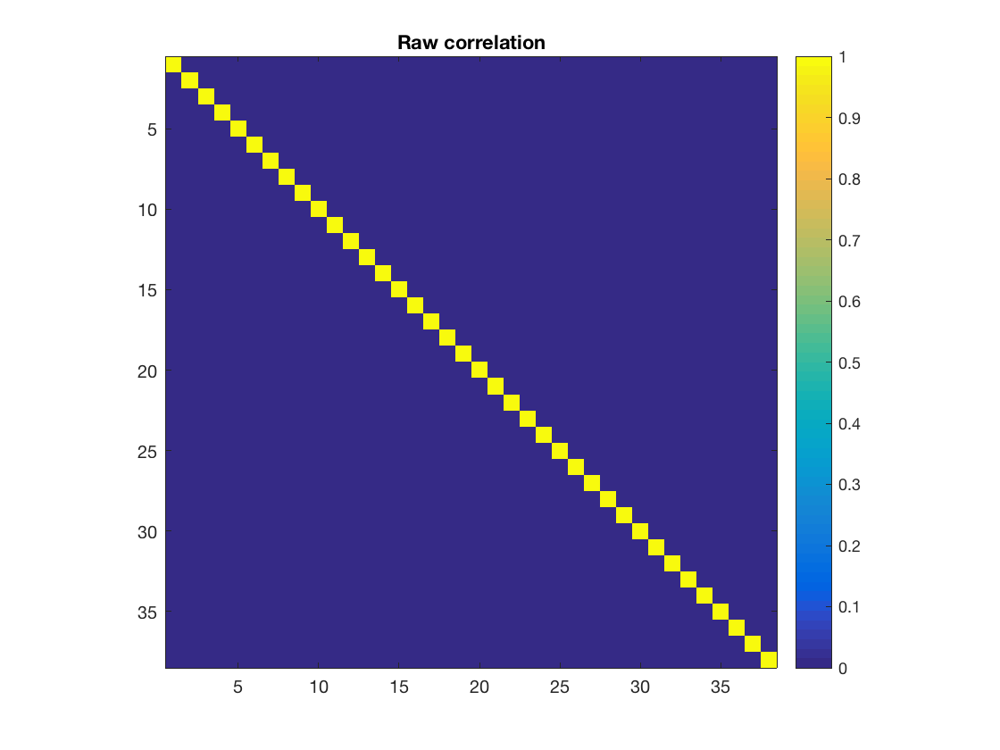
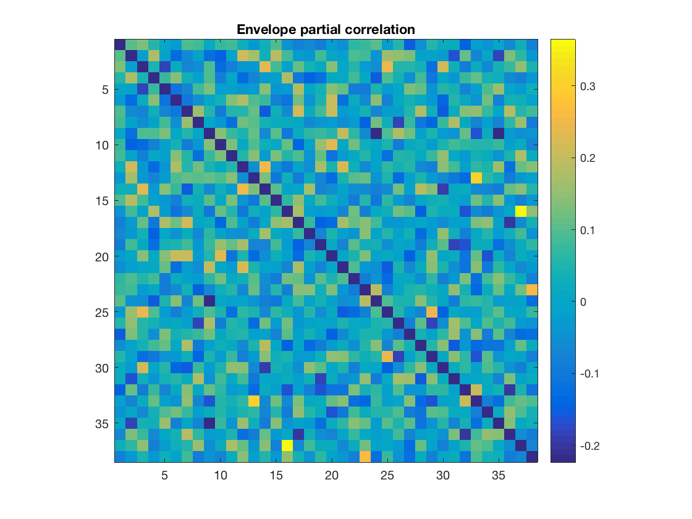
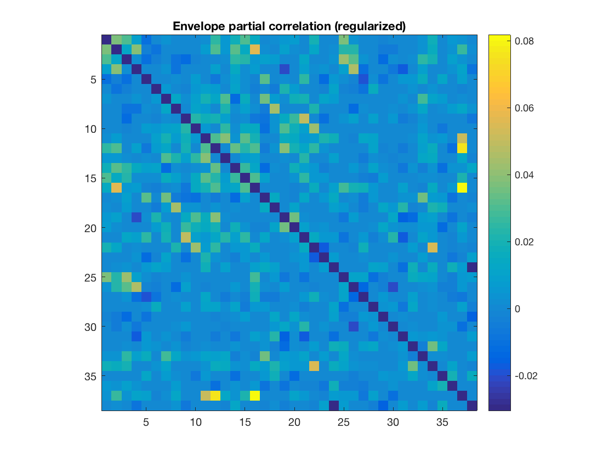
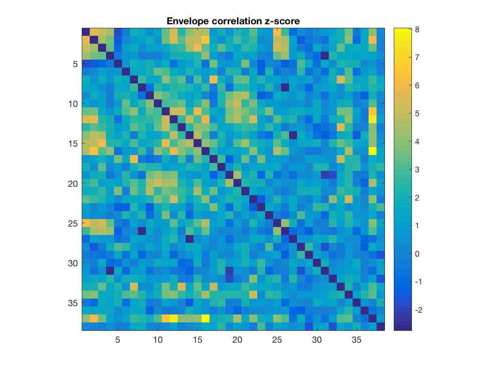
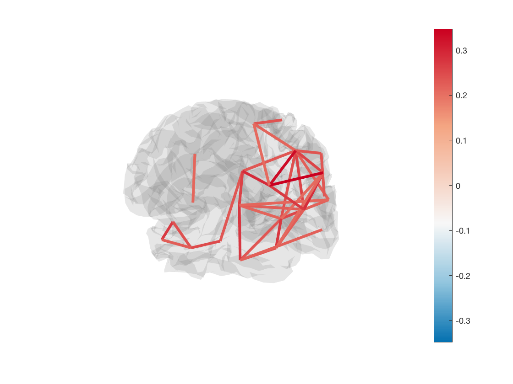
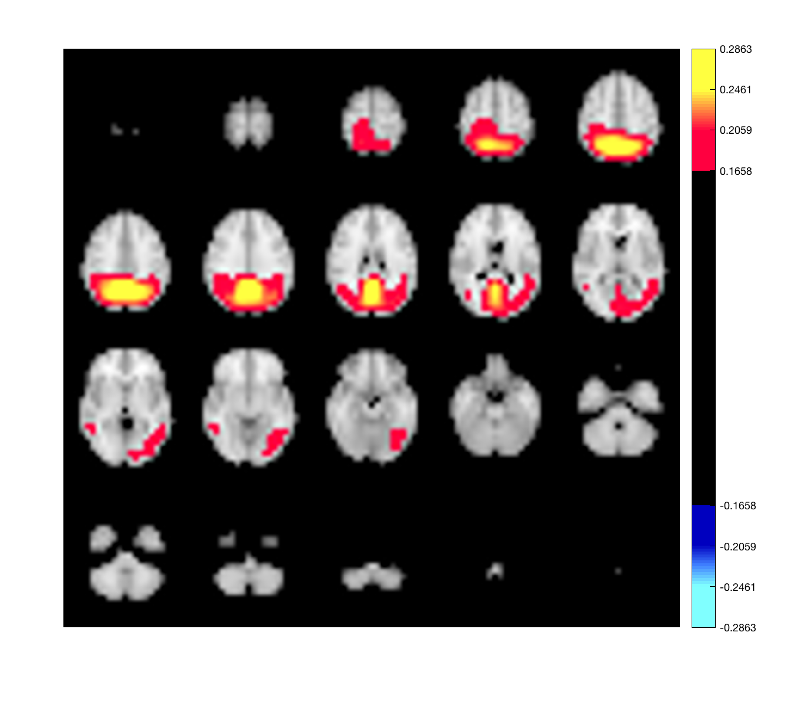

ROInets 3 - Group network connectivity analysis
This example uses shows how to analyze connectivity at the group level.
Here we will perform a standard connectivity analysis using ROInets. Core functionality is provided by ROInets.run_network_analysis(). The key inputs are
- A set of beamformed SPM MEEG objects
- A spatial basis matrix - a matrix mapping voxels to parcels
The analysis can be time consuming, and pre-generated results are included with the OSL example data (not available through GitHub). To re-run the analysis (~15-30 minutes), set run_analysis to true below
run_analysis = false;
Either way, the spatial basis will be useful for analysis, so select it it now
spatial_basis_file = fullfile(osldir,'parcellations','fmri_d100_parcellation_with_PCC_reduced_2mm_ss5mm_ds8mm.nii.gz');
If we are running the analysis, we need to get a list of MEEG objects. Below, we identify where the data are, and where the output should be saved to.
data_dir = fullfile(osldir,'example_data','roinets_example'); output_directory = fullfile(osldir,'practical','roinets_demo'); if run_analysis mkdir(output_directory) end
Next, we load the MEEG files. Typically, the source-space signals are stored as an online montage. It is essential that this montage is the selected montage. Therefore, make sure that the montage is switched to the correct montage before going any further.
if run_analysis subjects = 1:10; D_files = {}; session_name = {}; for j = 1:length(subjects) session_name{j} = sprintf('subject_%d',j); D = spm_eeg_load(fullfile(data_dir,session_name{j})); D_files{j} = D.copy(fullfile(output_directory,session_name{j})); D_files{j} = D_files{j}.montage('switch',2); end end
The settings for ROInets.run_network_analysis() are passed in as a struct. See run_network_analysis.m for a full listing of available options
if run_analysis Settings = struct(); Settings.spatialBasisSet = spatial_basis_file % a binary file which holds the voxel allocation for each ROI - voxels x ROIs Settings.gridStep = 8; % mm % resolution of source recon and nifti parcellation file Settings.Regularize.do = true; % use regularization on partial correlation matrices using the graphical lasso. Settings.Regularize.path = logspace(-9,2,80); % This specifies a single, or vector, of possible rho-parameters controlling the strength of regularization. Settings.Regularize.method = 'Friedman'; % Regularization approach to take. {'Friedman' or 'Bayesian'} Settings.Regularize.adaptivePath = true; % adapth the regularization path if necessary Settings.leakageCorrectionMethod = 'closest'; % choose from 'closest', 'symmetric', 'pairwise' or 'none'. Settings.nEmpiricalSamples = 8; % convert correlations to standard normal z-statistics using a simulated empirical distribution, this many repetitions Settings.ARmodelOrder = 1; % We tailor the empirical data to have the same temporal smoothness as the MEG data. Settings.EnvelopeParams.windowLength = 2; % s % sliding window length for power envelope calculation. See Brookes 2011, 2012 and Luckhoo 2012. Settings.EnvelopeParams.useFilter = true; % use a more sophisticated filter than a sliding window average Settings.EnvelopeParams.takeLogs = true; % perform analysis on logarithm of envelope. This improves normality assumption Settings.frequencyBands = {[8 13], [13 30], []}; % a set of frequency bands for filtering prior to analysis. Set to empty to use broadband Settings.timecourseCreationMethod = 'spatialBasis'; % 'PCA', 'peakVoxel' or 'spatialBasis' Settings.outputDirectory = output_directory; % Set a directory for the results output Settings.groupStatisticsMethod = 'fixed-effects'; % 'mixed-effects' or 'fixed-effects' Settings.FDRalpha = 0.05; % false determination rate significance threshold Settings.sessionName = session_name; Settings.SaveCorrected = struct('timeCourses', false, ... % save corrected timecourses 'envelopes', true, ... % save corrected power envelopes 'variances', false); % save mean power in each ROI before correction end
Run the network analysis, or otherwise load the precomputed results
if run_analysis correlationMats = ROInets.run_network_analysis(D_files,Settings); d = load(fullfile(output_directory, 'corrected-ROI-timecourses','subject_1_13-30Hz_ROI_envelope_timecourses.mat')); else d = load(fullfile(data_dir,'ROInetworks_correlation_mats.mat')) end
d =
struct with fields:
correlationMats: {[1×1 struct] [1×1 struct] [1×1 struct]}
The outputs comprise a cell array with one struct for each frequency band being analyzed. The band-specific connectivity profiles are contained in these structs
d.correlationMats
d.correlationMats{1}
ans =
1×3 cell array
[1×1 struct] [1×1 struct] [1×1 struct]
ans =
struct with fields:
correlation: [38×38×10 double]
envCorrelation: [38×38×10 double]
envCovariance: [38×38×10 double]
envPrecision: [38×38×10 double]
envPartialCorrelation: [38×38×10 double]
envCorrelation_z: [38×38×10 double]
envPartialCorrelation_z: [38×38×10 double]
envPartialCorrelationRegularized: [38×38×10 double]
envPrecisionRegularized: [38×38×10 double]
envPartialCorrelationRegularized_z: [38×38×10 double]
Regularization: [1×10 struct]
ARmodel: [1×10 struct]
H0Sigma: [1×10 struct]
nEnvSamples: [56 56 56 56 56 56 56 56 56 56]
sessionNames: {1×10 cell}
frequencyBand: [8 13]
groupEnvCorrelation_z: [38×38 double]
groupEnvPartialCorrelation_z: [38×38 double]
groupEnvPartialCorrelationRegularized_z: [38×38 double]
falseDiscoveryRate: [1×1 struct]
The correlation matrices are produced for each subject, and can be averaged over to obtain group-average connectivity profiles. Due to the orthogonalization, there is no raw correlation between brain regions (as expected). Note that the correlations along the diagonal are suppressed by adding NaNs, to improve clarity of the plots
figure
imagesc(mean(d.correlationMats{1}.correlation,3))
axis square
colorbar
title('Raw correlation')
figure
imagesc(mean(d.correlationMats{1}.envCorrelation,3)+diag(nan(38,1)))
axis square
colorbar
title('Envelope correlation')
 
Partial correlation matrices can also be obtained using regularization
figure
imagesc(mean(d.correlationMats{1}.envPartialCorrelation,3)+diag(nan(38,1)))
axis square
colorbar
title('Envelope partial correlation')
figure
imagesc(mean(d.correlationMats{1}.envPartialCorrelationRegularized,3)+diag(nan(38,1)))
axis square
colorbar
title('Envelope partial correlation (regularized)')
  The statistical significance of the connectivity profiles is obtained by converting them to z-scores by using a simulated empirical null distribution. This is generated using an autoregressive model.
figure
imagesc(d.correlationMats{1}.groupEnvCorrelation_z+diag(nan(38,1)))
axis square
colorbar
title('Envelope correlation z-score')
 Another way to display connectivity is to draw lines between brain regions. As there are a very large number of connections, it can be helpful to threshold the connectivity. The example below loads the parcellation into a Parcellation object (provided by OSL) and uses the plot_network() method to display the strongest 5% of connections
p = parcellation(spatial_basis_file);
p.plot_network(mean(d.correlationMats{1}.envCorrelation,3),0.95)
ans =
Patch with properties:
FaceColor: 'none'
FaceAlpha: 1
EdgeColor: 'flat'
LineStyle: '-'
Faces: [703×2 double]
Vertices: [1406×3 double]
Use GET to show all properties
 Another option for displaying connectivity is to display components of the connectivity as an activation map. For example, performing an eigenvalue decomposition of the connectivity matrix, and then rendering spatial maps of each of the states. This functionality is also provided by the Parcellation object.
[a,b] = eig(mean(d.correlationMats{1}.envCorrelation,3));
p.plot_activation(a(:,1));
Warning - parcellation is being binarized